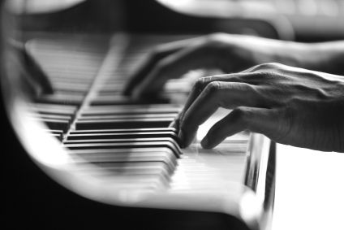
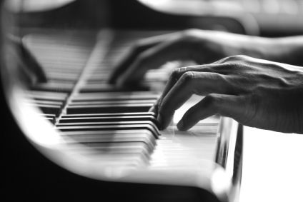

Muzika
Muzika je oduvek bila moja strast. Sviram par instrumenata (tacnije 4-5), od kojih najduže sviram klavir i gitaru.
 

Šta je ustvari muzika?
Muzika je umetnost stvaranja određenih tonova. Ona ima tri osnovna elementa:
- Dinamika
- Tempo
- Ritam
- Dinamika predstavlja odnos muzičkih tonova prema njihovoj jačini
- Tempo predstavlja brzinu kojom se neka kompozicija izvodi
- Ritam predstavlja kretanje tonova i pauza različite dužine
Još kao mala (tačnije sa 4 godine), imala sam plastičnu gitaru koju mi je tata kupio, te je ona bila moj prvi instrument. Tata me je naucio sve što je potrebno za početak, i više od toga. Sa 6 godina upisala muzičku školu u kojoj sam svirala klavir.
Svoju prvu gitaru, a i klavir kupila sam u Mitros Music-u.
Nadam da se da ću moći da se bavim muzikom profesionalno jednog dana. :)